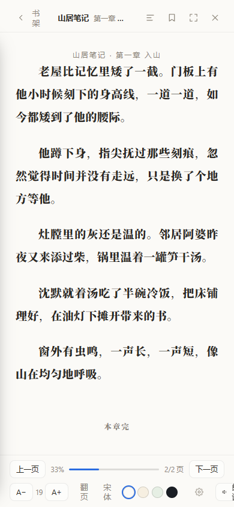
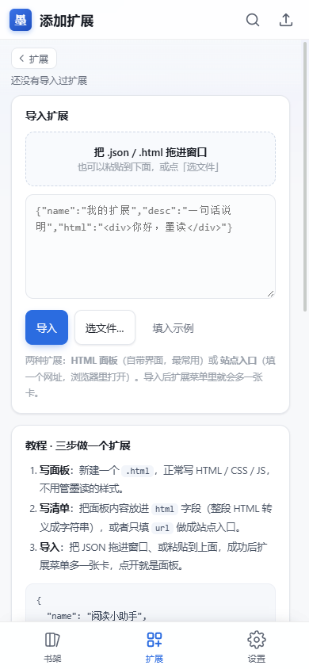

墨读 · 0.6.1 → 0.6.12
十二个版本，从一屏 17 行
到九个平台
0.6.1 是 11 月 7 日上午发的。那天只做了三件事：去掉正文底部一段多余的内边距、把行距从 2.0 调到 1.7、换了图标。
十一天后是 0.6.12。同一个应用已经跑在九个平台上，能自己解开 AES 加密的书源正文，也能让你写一个面板直接插进去用。
中间的十二个版本，值得完整记一次。
· · ·
01 一屏从 17 行到 23 行
最早的抱怨是「正文下面空一大块」。
查下去发现不是排版算错，是正文容器底部挂着 96px 的内边距。这段空间是几年前给「底部工具栏盖住正文」留的缓冲——可那个工具栏其实是独立的一行布局，从来没盖住过正文。等于每一屏都在白扔两行半。
96px 内边距 → 18px（竖屏）/ 44px（桌面）。同样的字号，一屏从 17 行变成 23 行。
顺手把行距从 2.0 降到 1.7，段距从「按行距推算」拆成独立的滑杆。阅读器底栏原来那两个「滚动 / 宋体」按钮，换成一个 Aa：字号、行距、段距、字体、翻页方式、主题全在里头，拖动即时重排，不用退出重进看效果。

分页模式下的正文，底部不再留大片空白
02 换掉用了两年的默认图标
同一个版本里，把图标也换了。此前 Windows 版 exe 的图标和版本号一直是 Electron 的默认值——任务栏里是那只电子，属性里是空白。
新图标是矢量画的：深墨底、一本摊开的书、「墨读」两个字，底下一道朱红短线。写了个脚本一次生成全套：ico 七帧、托盘、网页的 180 / 192 / 512，小于 96px 时自动去掉字标只留书。

摊开的书 · 墨读 · 一道朱红
03 一个月，从一个平台到九个
0.6.2 和 0.6.3 两版几乎全花在跨平台上。前端只有一套，打包脚本按平台补差异：
| Windows | zip 便携包，exe 图形与版本号一起写进去 |
| Linux x64 / arm64 | tar 包在 Windows 上会按 NTFS 写权限位，解压后程序没有执行权限，得手改 |
| macOS Intel / ARM | framework 里的 Versions/Current 是符号链接，解压再压一次 .app 就打不开了 |
| Android | WebView 壳，图标后来补成自适应图标 |
| 鸿蒙 NEXT | ArkWeb 壳，自签名要取模板里那张证书，拿错就 verify 失败 |
| iOS | 完整 Xcode 工程，ipa 借 GitHub 的 macOS 机器编，Windows 上也能出包 |
| 网页 PWA | 浏览器直接打开，不用装 |
这九个包里，Linux 和 macOS 是真产物（项目没有原生模块，Electron 运行时就是预编译压缩包），鸿蒙和 iOS 要各自签名才能装。一个版本号，九个资产，一次发齐。
· · ·
04 搜不到书，不是源的问题
0.6.4 到 0.6.5 在查一件很怪的事：两千多个书源，搜一本书，结果里只有站点名和「推荐位」，加进书架就是一本正文乱码的假书。
真因土得有点好笑——搜索地址里的占位符从来没被替换。程序把 {{key}} 原样发了出去，站点收到 q={{key}}，当然返回零条。页面空着，规则只能抓到导航栏里的站点名，于是「书名」就成了「去看小说网」。
修完之后又加了三道关：
洗标题：砍掉「最新章节列表」「全文免费阅读」这类噪声，顺手把作者捞出来
算相关度：和关键词一分不沾的直接丢
猜结果：规则失效时按锚文本和链接归属判断，不再「整页当一本书」
同一本在十个源都搜到，就合并成一张卡，点标签换源。一章拆成三页的站，自动把后面几页拼回来——某本书一章从 1154 字变成 6356 字。
同一个备份、同一本书：24 个源从「0 条正确 + 2 条站点名垃圾」，变成 10 个源命中真书。
05 显示第 59 章，点进去第 660 章
这是最像灵异事件的一个 bug：书架显示「读到第 59 章」，点进去正文却是第 660 章。
原因是书架存的那个地址指向「下载页」，页面上只挂着十来条倒序的最新章。真目录有 716 条，在另一个字段里躺着。程序拿 12 章的目录去对应第 59 章的进度，索引一越界就落到最后一章——第 660 章。
改法是两步：目录先归一化（去重、按章号升序、番外和感言排到末尾、把贴在开头的「最新章节」块按章号归位），进度定位做四级兜底——标题、标题包含、中文数字章号、比例，一路退到能对上为止。老书里缓存的短目录，会自动重抓一次。
0.6.7 又把这条链路整体提速：连接复用、正文容器「够长且最深」的判定、目录可信度校验（粉丝榜和排行榜再也不会被当成目录），网页搜书的结果也和书源搜索对齐了——一本书一张卡，点站点小标就能换站。
06 换源卡住，是因为它在同步等网络
0.6.8 解决的是「换源像卡死一样」。拆下来是三个问题：
一是带脚本的书源，请求是同步发的，一次 0.8–1.6 秒，却和普通源放在同一个并发队列里，把界面主线程钉住。改成两条队列：普通源并发 10，脚本书源默认不搜，面板底下给一个「还有 N 个脚本书源没试 / 试一下」。主线程最长阻塞从 1693 毫秒降到 82 毫秒。
二是高级书源的正文是 AES 加密的，之前解不出来，就把接口返回的 JSON 当正文显示了，屏幕上全是 {"code":1,"data":…。现在自己解，解不出来也会明说，不再糊你一屏密文。
三是书源的 header 字段从来没生效过——它一直是单数字段，程序只读复数那个。所有要 Referer 或签名的站因此全军覆没，「换源搜不到书」多半就是它。修好之后，那批一直「请求超时」的站能搜到书了。
· · ·
07 侧栏从 7 个减到 3 个
功能越加越多，侧栏先撑不住了：书架、搜索、书源、历史、统计、扩展、设置，七个入口。0.6.9 到 0.6.11 做了一轮整理。
现在只剩 书架 / 扩展 / 设置。书源、阅读历史、阅读统计收进「扩展」做二级页，点进去就是原来的整页功能，左上角一条「‹ 扩展」退回菜单。书签搬进了阅读器的目录抽屉，和目录一个页签——同一章存好几个位置也放得下。
左：设置拆成 8 张模块卡 右：扩展菜单
设置原来是一整页铺到底，手机上要滑十几屏。现在拆成八张模块卡（阅读、朗读、书架、搜索与网络、数据与备份、云端同步、系统、关于），右侧挂着当前状态，点进去只看那一组，改完即时生效，没有保存按钮。
0.6.10 还顺手改了两件事：安卓的桌面图标补成和电脑版同款（此前只有「一本书」，没有字标）；书架的「继续阅读」卡片做成四边齐平——封面顶边对齐上方文字，底边对齐按钮。
同版本里还有个很小但很烦人的改动：目录不再把封面、版权页、作者引言算成章节。纯图片页在解析阶段就丢掉了，前言、序、后记、附录归到「卷首 · 附录」单独一组，序号位置显示一个「·」。书架和阅读页顶部的「共 N 章」，从此只数正文。
08 现在可以给它写插件了
0.6.12 的扩展页末尾多了一张虚线卡：添加扩展。
点进去是一整页教程加导入框。一个 JSON，一段 HTML，拖进窗口就能用——不用改源码，不用等发版。三种导入方式：拖拽、粘贴、选文件（手机上会拉起系统的文件选择器）。

左：教程与导入 右：导入后的面板
面板跑在 sandbox iframe 里，读不到书库和存档，需要数据得靠 postMessage 说话：toast 弹提示、context 拿当前在读的书和章节、search 搜书、openBook 打开一本书。
扩展存在 data.json 里，备份、换设备、导出恢复一起带走。想分发给别人，就给他那一个 JSON 文件。
· · ·
写在最后
十二个版本，六十多项改动，一半以上来自「这样用着不舒服」的一句话。上面那些 bug，没有一个是一开始就想明白的——都是先复现、再怀疑自己的代码、最后发现某个字段从来没被读过。
如果你也在用，遇到问题随时说。评论、后台、抖音都能找到我。
附 安装包怎么拿
公众号里塞不进一个 140MB 的压缩包，所以做了个下载页：扫下面这张码，手机上按自己的设备点一下就能装，不用在 GitHub 的 Release 列表里翻。
长按识别 / 扫码打开下载页 · v0.6.12
下载页里有什么
Windows x64 · 141 MB
Android APK · 4.5 MB（手机装这个）
macOS Apple 芯片 / Intel · 120 / 122 MB
Linux x64 / ARM64 · 118 / 121 MB
鸿蒙 HAP（已签名）· 2.3 MB
iOS 未签名 ipa（需自签）· 1.9 MB
网页版不用装，浏览器打开就能读：
routinemiku.github.io/MoRead-Windows
文章底部的「阅读原文」也是这个下载页。
安装包全部在 GitHub Releases 上，开源、免费、无广告，数据只存在自己的设备里。安卓装之前系统可能提示「允许安装未知来源」；Windows / macOS / Linux 解压直接运行，不需要安装器。
仓库 · Releases · v0.6.12
github.com/RoutineMiku/MoRead-Windows
开源 · 免费 · 无广告 · 数据都在本地

左：扫码关注，更新都在这 右：扫码下载